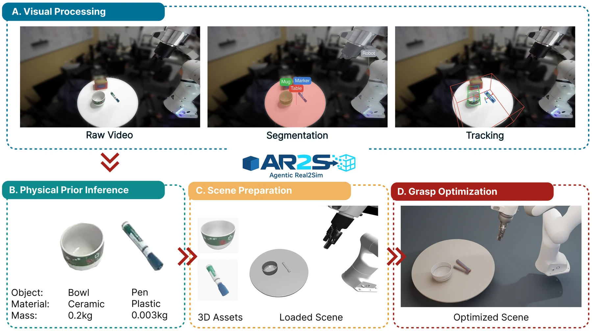
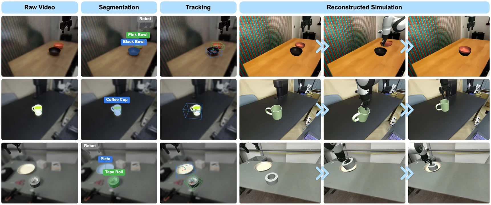

Agentic Real2Sim: Physics-based World Modeling with Vision-Language Agents
- PaperAgentic Real2Sim: Physics-based World Modeling with Vision-Language Agents
- AuthorsGuanxiong Chen, Qianjun Xia, Jiawei Peng, Heng Zhang, Pengyu Jing, Bole Ma, Justin Qian, Yixian Cheng, Ziyi Jiao, Bingyang Zhou, Yiduo Qu, Luoxin Ye, Kaifeng Zhang, Kunyi Wang, Weijia Zeng, Yunuo Chen, Pengzhi Yang, Ziqiu Zeng, Siyuan Luo, Huamin Wang, Chao Liu, Alan Yuille, Fan Shi, Changxi Zheng, Yunzhu Li, Chenfanfu Jiang, Peter Yichen Chen
- FromUniversity of British Columbia, Johns Hopkins University, Friedrich-Alexander-Universität Erlangen-Nürnberg, Columbia University, University of California, Los Angeles, National University of Singapore, University of Cambridge, Style3D
- arXivarXiv:2607.19190 (cs.RO), July 2026
- LinksProject page · Code
Turning a recording of a robot handling objects into a simulation takes more than a 3D reconstruction. The scene's geometry and object states must be recovered, physical parameters inferred, and robot, objects, cameras, poses and trajectories assembled into a simulation that runs. Today this relies on brittle glue: hand-tuned vision models, mesh cleanup, aligning coordinate frames. Agentic Real2Sim lets vision-language agents do this work, and turns a recording into an episode twin that can be used to fine-tune and evaluate robot policies.


How it works
The vision-language model does not make geometry or simulate physics itself. It directs specialised tools for segmentation, stereo depth, pose tracking and a deterministic grasp sweep, and makes narrow decisions with a fixed output format: which objects matter, which keyframes and masks to use (with a capped number of retries), and how to refine the replay. The result is a MuJoCo episode twin. The same episode format also serves deformable objects (rope, cloth, plush toys, in the style of PhysTwin) and humanoid motion (a Unitree G1).
What it was tested on
The main test converts 500 randomly chosen manipulation episodes from DROID. An episode counts as replayed when at least one of three judges (GPT-5.5, Claude Opus 4.7 and Gemini 3.5 Flash) scores the simulated keyframes at least 8 out of 10 against the real ones, with points taken off for the wrong object, wrong final position, wrong action or wrong gripper position. PSNR, SSIM and the pose error ADD-S complete the picture.


What the paper found
With the open Gemma 4 31B as the agents' model, 242 of the 500 episodes (48.4%) are replayed successfully, 28 in part and 230 fail. On 100 episodes, four models give similar results: Gemma 4 31B 48 successes, Qwen 3.6 35B 45, GPT-5.4 43 and Claude Haiku 4.5 37. Their cost differs far more: Gemma's bill was $2.62, about 3% of GPT-5.4's. The authors explain this by the narrow role of the model. The workflow matters too: Gemma 4 31B alone in Codex, given the same inputs and an hour per episode, delivered no complete, runnable twin for any of three episodes. Most failures come from earlier steps: objects nudged rather than lifted, missing or merged meshes, and wrong initial poses, especially with clutter, occlusion or poor light. The twins also served to fine-tune a pretrained policy and to stand in for real-world policy evaluation, and the pipeline converted an episode recorded on a robot arm that DROID does not include.
Where it fits
In our research map, Awesome-Real2Sim, Agentic Real2Sim is a method that delivers an executable simulation program: a MuJoCo twin of an episode, assembled and refined by agents. Real2SimLab judges a method by the twin it delivers, and the paper's comparison with a single coding agent makes the same point: with the same model, only the workflow delivered twins that run.